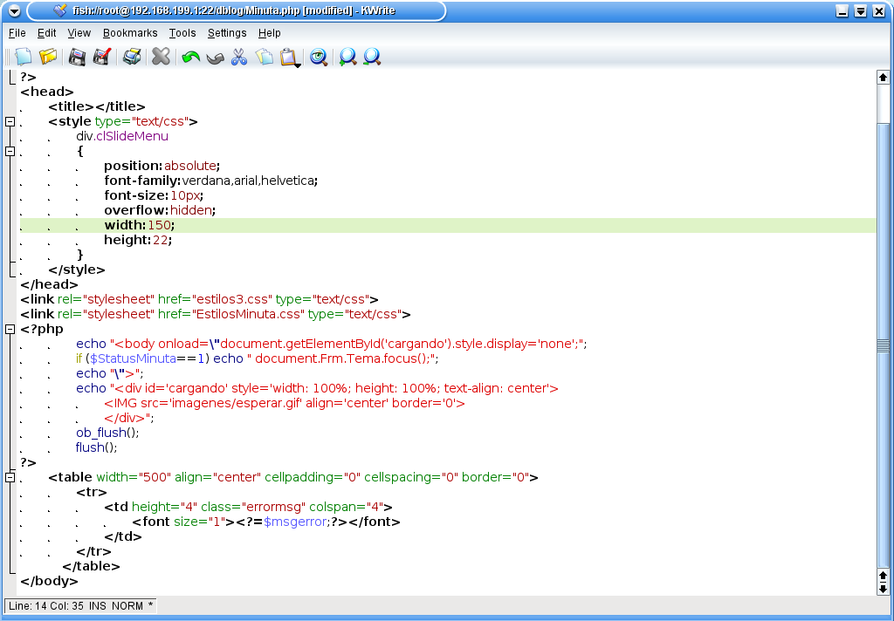

Este sitio wed fue creado con el proposito de fomentar y dinamizar el aprendizaje ofreciendo información, recursos y materiales educativos
Sintaxis y Selectores CSS
CSS significa Cascading Style Sheets (hojas de estilo de cascada) y es un lenguaje que describe el estilo de un documento HTML, se describe cómo se deben mostrar los elementos HTML que se mostrará en la pantalla, papel, o en otros medios, CSS ahorra mucho trabajo, se utiliza para definir estilos para sus páginas web, incluyendo el diseño, la disposición y las variaciones en la imagen para los diferentes dispositivos y tamaños de pantalla.
Sintaxis CSS
La sintaxis de las definiciones CSS consta de dos partes: un selector y una declaración, Los puntos selector para el elemento HTML que desea estilo.
El bloque de declaración contiene una o más declaraciones separadas por punto y coma.
Cada declaración incluye un nombre de propiedad CSS y un valor, separados por dos puntos.
Una declaración CSS siempre termina con un punto y coma, y los bloques de declaraciones están rodeados por llaves.

Selectores CSS
Selectores CSS se utilizan para "find" (o seleccionar) elementos HTML en función de su nombre de elemento, de la identificación, clase, atributo, y mucho más.
Existen diferentes tipos de selectores:
- selector de elemento
- selector de ID
- selector de clase
- agrupación de selectores
- CSS Comentarios
Cabrera, L. V. (2012). Introducción a CSS. Obtenido de https://www. cs. us. es/blogs/bd2013/files/2013/09/IntroducciónCSS. pdf.
Interacción Humano Ordenador
Cuando se habla de la interacción entre las personas y la tecnología, es fácil perder el equilibrio y poner el énfasis bien en las personas o bien en la tecnología.
"Si pierdes de vista alguno de estos aspectos, te equivocarás a la hora de diseñar... Creo que el reto es obtener el conocimiento tanto de la tecnología como de las personas para desarrollar cosas nuevas" . Con el paso del tiempo la tecnología se ha vuelto omnipresente y aparece en muchos ámbitos de la vida de las personas. La tecnología está presente en forma de ordenador, dispositivo, producto o servicio en oficinas, fábricas, tablones de atención al público, cajas registradoras, centros comerciales o máquinas expendedoras de billetes de tren. Los profesionales de la tecnología, sean informáticos, diseñadores o psicólogos, tienen que desarrollar productos que respondan a las necesidades de los usuarios, que puedan utilizar sin que generen frustraciones para lograr sus objetivos.
CC-BY-SA PID_00180441 4 Interacción persona-ordenador que precede al desarrollo y determina su éxito o fracaso. Hay que diseñar soluciones a productos y servicios, hay que diseñar la tecnología de estos productos y las funcionalidades que ofrece, hay que diseñar interfaces para que las personas las puedan utilizar, en definitiva, hay que diseñar la experiencia de los productos y servicios interactivos. La importancia del diseño en la tecnología nos presenta también una paradoja interesante. Si un producto interactivo está bien diseñado, su interfaz y su interacción nos pasan desapercibidas.
Así pues, cuanto mejor diseño tenga la interfaz y la interacción, menos la notaremos y, por lo tanto, menos se verá el trabajo de su diseñador. El trabajo del profesional de la interacción persona-ordenador es un reto constante y que pasa desapercibido cuando se logra el objetivo de hacer la tecnología invisible. El reto del profesional de la IPO y la experiencia de usuario se ven reforzados por la relación entre las personas y la tecnología. Es un círculo que se retroalimenta, donde la tecnología empodera a las personas y donde el profesional de la IPO se ocupa de que sea la tecnología la que se adapte a las personas y no al contrario.
En la práctica, se trata la experiencia de usuario desde sus diferentes vertientes y ámbitos de aplicación, poniendo un énfasis especial en el diseño centrado en el usuario como aproximación a la realización y desarrollo de proyectos que persiguen obtener productos interactivos usables y satisfactorios para las personas. En estos materiales didácticos se presentan los aspectos principales de la experiencia de usuario, la interacción persona-ordenador, el diseño centrado en el usuario y las tecnologías accesibles. La accesibilidad es un aspecto importante y transversal en toda la IPO, donde el diseño y los usos de la tecnología ofrecen solución a las particularidades y necesidades específicas de las todas las personas.

Martínez, C. C., Garreta, M., Hassan, Y., Martínez, L., & Mor, E. (2011). Interacción persona-ordenador. UOC.